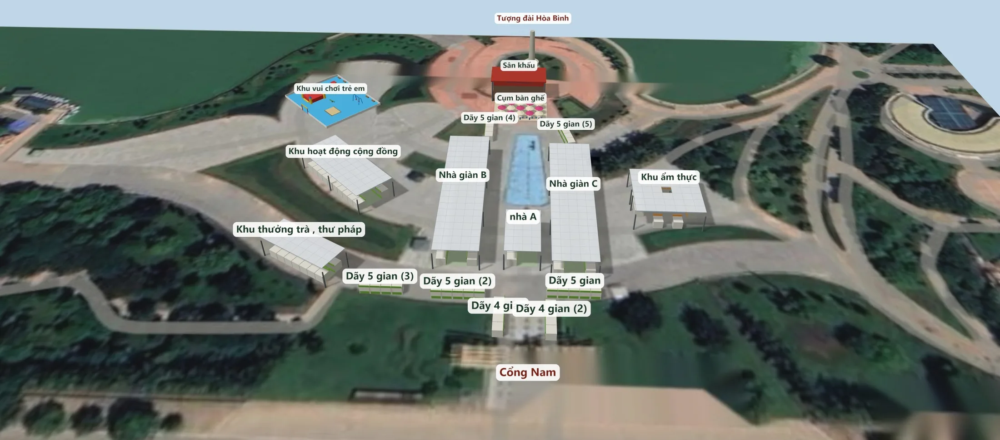
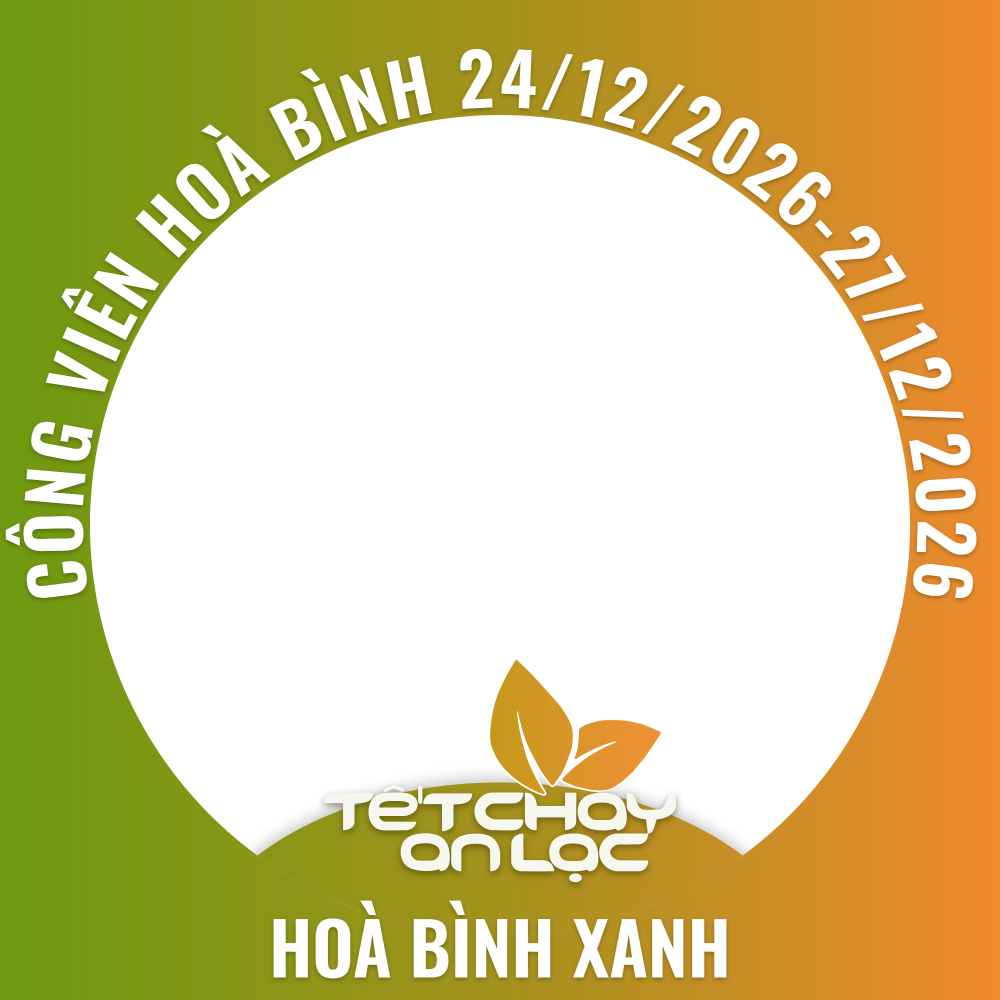

Mua sắm đón năm mới
Sản phẩm chay, nông sản sạch, đặc sản vùng miền chất lượng, có nguồn gốc rõ ràng cho người dân phường Xuân Đỉnh và Thủ đô.
Hội chợ Triển lãm Sản phẩm Chay, Xanh và Phát triển Bền vững
Giới thiệu
Hội chợ Triển lãm Sản phẩm Chay, Xanh và Phát triển Bền vững “Tết Chay An Lạc”, chủ đề “Hòa Bình Xanh”, diễn ra từ ngày 24 đến 27/12/2026 tại Công viên Hòa Bình, phường Xuân Đỉnh, Hà Nội. Nhân dịp đón năm mới 2027, hội chợ tạo một điểm mua sắm thuận tiện cho người dân Thủ đô với sản phẩm chay, nông sản sạch và đặc sản vùng miền chất lượng, có nguồn gốc rõ ràng.
Sản phẩm chay, nông sản sạch, đặc sản vùng miền chất lượng, có nguồn gốc rõ ràng cho người dân phường Xuân Đỉnh và Thủ đô.
Hỗ trợ doanh nghiệp, hợp tác xã, chủ thể OCOP quảng bá thương hiệu, kết nối tiêu thụ B2B và B2C.
Ăn chay vì sức khỏe và môi trường, giảm rác thải nhựa; hưởng ứng Cuộc vận động “Người Việt Nam ưu tiên dùng hàng Việt Nam”.
Tôn vinh danh hiệu UNESCO trao cho Hà Nội năm 1999; giao lưu, thưởng trà, thư pháp mừng Đảng, mừng Xuân Đinh Mùi.
Công ty Cổ phần Đầu tư Tân Tân
Thương hiệu tổ chức sự kiện VnVegfest
Tổng quan
Thực phẩm chay, thuần chay; trà, trầm; nông sản hữu cơ, sản phẩm OCOP, đặc sản ba miền, hàng Tết; tiêu dùng xanh.
Công nghệ xanh, sản phẩm tái chế, công nghệ nông nghiệp xanh; triển lãm ảnh “Hà Nội – Thành phố vì hòa bình”; gian doanh nghiệp, tổ chức môi trường.
Khu ẩm thực chay ăn tại chỗ (bàn ghế ở giữa khu, bát đũa tái sử dụng); workshop; trạm đổi rác lấy cây; khu vui chơi trẻ em.
Cạnh khu vực Tượng đài Hòa Bình: khai mạc, giao lưu, bế mạc.
Cạnh Không gian Chay An Lạc: tọa đàm, workshop, bếp trình diễn.
Ban Tổ chức, trạm y tế, trạm nước uống, điểm phân loại rác, nhà vệ sinh di động, bãi gửi xe.
Bản đồ
Hội chợ đặt tại Công viên Hòa Bình, phía đường Hoàng Minh Thảo, phường Xuân Đỉnh. Lối vào chính qua Cổng Nam.
Sơ đồ gian hàng
150 gian hàng tiêu chuẩn 3 m × 3 m đặt trong nhà giàn không gian, bố trí từ Cổng Nam lên đến sân khấu cạnh Tượng đài Hòa Bình.

Hoạt động chính
Gian hàng mở cửa 08:00 – 21:00 hằng ngày. Chương trình dự kiến, có thể điều chỉnh; các hoạt động không bán vé.
90 phút, các tiết mục văn nghệ chào mừng và nghi thức “Gieo mầm xanh – Trao gửi hòa bình” tại sân khấu chính.
Tham quan, mua sắm tại 150 gian hàng.
Tại sân khấu phụ cạnh Không gian Chay An Lạc.
Nhà sản xuất, hợp tác xã, chủ thể OCOP gặp gỡ đối tác tiêu thụ.
Hoạt động cộng đồng tập trung vào chiều tối cuối tuần.
Đường chạy khép kín trong Công viên Hòa Bình.
Thưởng trà, thư pháp, cho chữ mừng Xuân tại khu thưởng trà, thư pháp.
Giới thiệu nghệ thuật trà Việt, mời trà khách tham quan; thầy đồ cho chữ, viết câu đối, thư pháp mừng Xuân Đinh Mùi.
Giao lưu, chia sẻ kinh nghiệm ăn chay, sống xanh, bảo vệ môi trường; trò chơi dân gian, hoạt động tập thể cho người dân.
Các trò chơi an toàn cho thiếu nhi, có người hướng dẫn và trông giữ.
Chủ Nhật 27/12 · Ngày Cộng đồng
Chạy khép kín trong Công viên Hòa Bình, lan tỏa lối sống xanh và rèn luyện sức khỏe, trong ngày “Kết nối – Cho đi là còn mãi” cùng lễ vinh danh tình nguyện viên, tri ân nghệ nhân & đối tác.
Đăng ký giải chạyThứ Sáu 25/12 · Hương vị chay Việt
Cuộc thi nấu chay trong ngày tập trung ẩm thực, cùng trình diễn món chay vùng miền và talkshow dinh dưỡng.
Đăng ký dự thiTiêu chí
Áp dụng cho mọi đơn vị đăng ký gian hàng, để hội chợ trang trọng, văn minh, đúng chủ đề “Hòa Bình Xanh”.
Hành trình
Công viên Thống Nhất, Hà Nội
Hình ảnh và thông tin kỳ này đang được cập nhật.
Công viên Hòa Bình, phường Xuân Đỉnh, Hà Nội · 24–27/12/2026
150 gian hàng · 3 phân khu · 2 sân khấu
Ban Tổ chức sẽ thông báo trên website và fanpage.
Bức tường danh dự
Đơn vị tham gia
Doanh nghiệp, hợp tác xã, chủ thể OCOP, hộ kinh doanh và đơn vị công nghệ xanh góp mặt tại 150 gian hàng.
Danh sách đơn vị tham gia đang được cập nhật.
Khung ảnh đại diện
Ghép ảnh của bạn vào khung chính thức của hội chợ chỉ trong vài giây, rồi đổi ảnh đại diện Facebook, Zalo để rủ bạn bè cùng đến Công viên Hòa Bình từ 24 đến 27/12/2026.

Tin tức
Đăng ký & liên hệ
Đăng ký gian hàng, chạy Vegan Run, dự thi “Bếp Chay An Lạc”, làm tình nguyện viên hoặc đồng hành cùng hội chợ. Ban Tổ chức sẽ liên hệ lại với bạn.